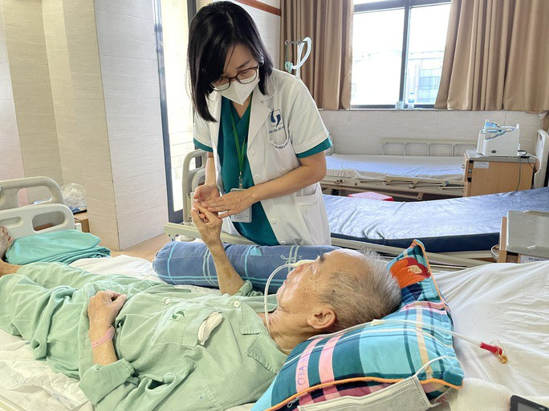

Bà Trần Thị Trang, quyền Vụ trưởng Vụ BHYT - Bộ Y tế,
cho biết nhằm đồng bộ chính sách
TS Nguyễn Khánh Phương, Phó Viện trưởng Viện Chiến lược và Chính sách y tế - Bộ Y tế, cho hay nếu đưa bệnh tăng huyết áp vào sàng lọc sớm, chi phí khám chữa bệnh nói chung sẽ tăng trong 4 năm đầu. Bắt đầu từ năm thứ 5, chi phí này mới giảm xuống do đối tượng đích giảm. Tuy nhiên, việc sàng lọc sớm có thể giúp chi phí điều trị giảm từ hơn 9.000 tỉ đồng trong năm đầu xuống còn 195 tỉ đồng trong năm thứ 4 và gần như bằng 0 vào năm thứ 5. Theo tính toán, trong 10 năm, có thể tiết kiệm hơn 12.000 tỉ đồng chi phí khám chữa bệnh này.Đối với bệnh ung thư vú và ung thư cổ tử cung - 2 gánh nặng bệnh tật và là nguyên nhân gây tử vong hàng đầu do ung thư ở phụ nữ trên toàn cầu, TS Nguyễn Khánh Phương cho rằng việc phát hiện, điều trị sớm sẽ giúp nâng cao chất lượng sống, giảm chi phí điều trị, gánh nặng kinh tế đối với người bệnh.
Cả nước hiện có 91,3 triệu người tham gia BHYT, đạt tỉ lệ bao phủ gần 92% dân số. Trong 6 tháng đầu năm 2023, toàn quốc có 64,2 triệu lượt khám chữa bệnh với tổng chi phí khám chữa bệnh BHYT là hơn 46.200 tỉ đồng. Tuy nhiên, theo thống kê của Bộ Y tế, tỉ lệ chi phí người dân tự chi trả còn cao, chiếm đến 43% tổng chi tiêu y tế. Việt Nam đang cố gắng phấn đấu giảm tỉ lệ này còn khoảng 39% và mức lý tưởng nhất là 25%-26%.
Nhiệt độ hôm nay: 32oC Log1020
Nhiệt độ hôm nay: 32 oC Log1020
Nhiệt độ hôm nay: 32 oC Log1020

| Name | Telephone | Age | Address |
|---|---|---|---|
| Nguyễn Văn An | 0982889882 | 18 | Số 8A Tôn Thất Thuyết, Mỹ Đình |
| Nguyễn Văn An | 0982889882 | 18 | Số 8A Tôn Thất Thuyết, Mỹ Đình |
| Nguyễn Văn An | 0982889882 | 18 | Số 8A Tôn Thất Thuyết, Mỹ Đình |
| Nguyễn Văn An | 0982889882 | 18 | Số 8A Tôn Thất Thuyết, Mỹ Đình |